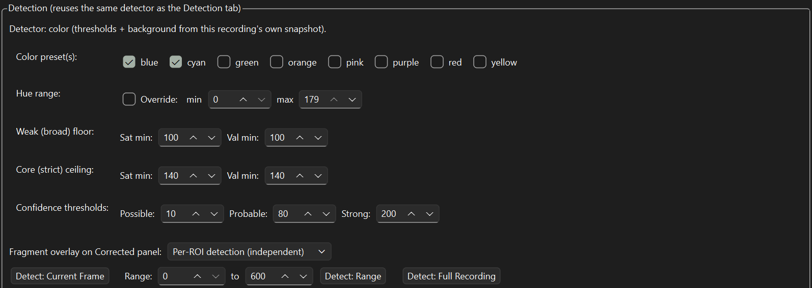
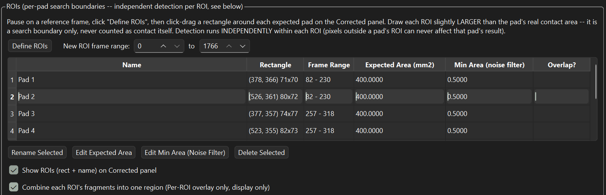
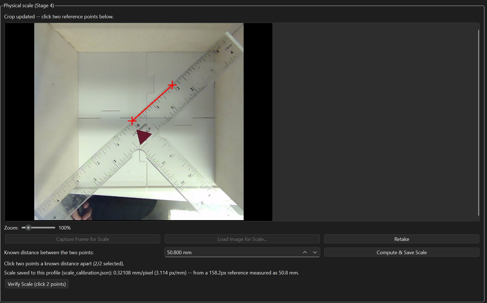
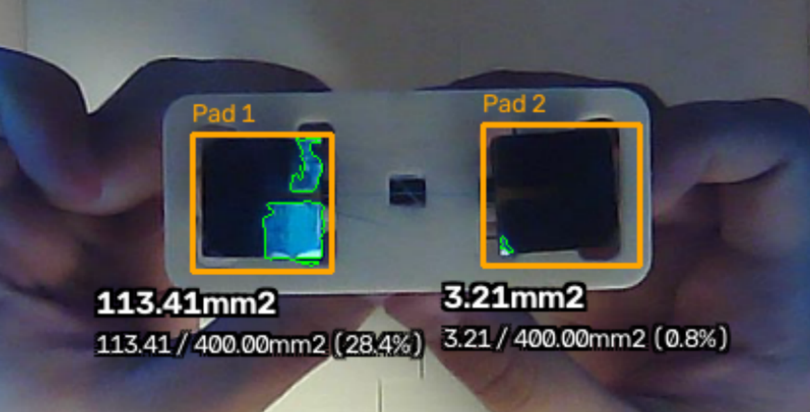
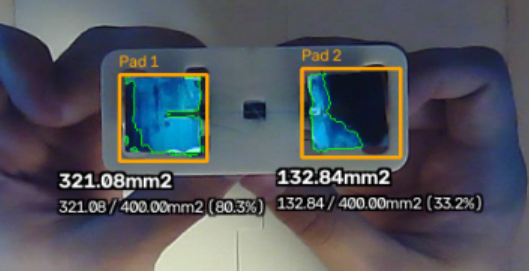
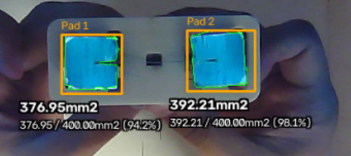
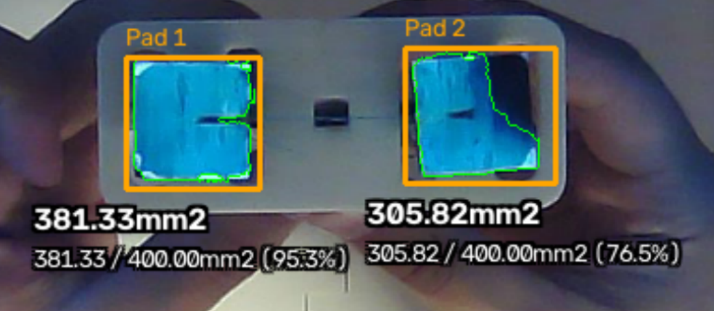
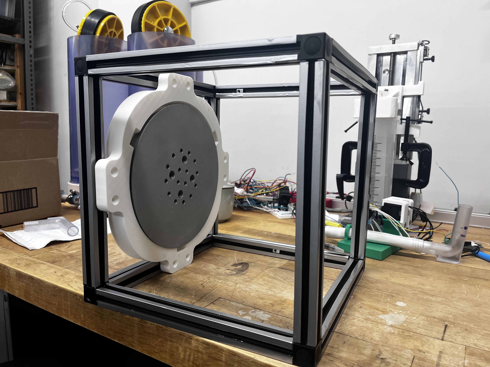

Ernesto Tellez Perez / Projects
Gecko-Inspired Adhesive Testing
As low-Earth orbit becomes more crowded with debris, robots need controlled ways to capture and stabilize objects without applying large forces. Gecko-inspired adhesives use wedge-shaped microstructures that are brought into contact using a controlled normal force and then engaged through shear loading. This project focused on building FTIR systems to visualize and measure how that contact develops during engagement and failure.

What I built
I built two FTIR imaging systems for different stages of the lab's research. The large-scale setup provided an 8 × 8 in. imaging area for testing gecko-inspired adhesives and observing how contact changed during engagement and failure. I also built a compact version for the lab's NASA TechLeap proposal, placing the camera within 2 in. of the glass while still capturing a 3 × 3 in. area within the payload's space constraints. The software supported both systems by correcting distortion and measuring the contact area of each adhesive pad over time.
Large-scale test bench
The larger FTIR test bench has an 8 × 8 in. imaging area, allowing larger grippers to be tested than with the compact system. The glass is mounted horizontally with the camera overhead and the grippers engaging upside down, preventing gravity from helping press them into the surface.


Image processing and calibration
Lens distortion was corrected using a standard OpenCV camera calibration pipeline. A ChArUco board, combining a checkerboard with uniquely identifiable ArUco markers, was recorded from multiple angles. Because each marker is independently identifiable, corners could still be detected when the board was partially blocked or outside the frame. The detected image points and known board geometry were passed into cv2.calibrateCamera to calculate the camera's intrinsic matrix and distortion coefficients. These values were used to create a fixed undistortion map for every frame, followed by an edge crop to remove unreliable border regions.
The corrected frames were converted to HSV color space and thresholded for the blue and cyan hues produced by frustrated total internal reflection at the adhesive interface. A tiered hysteresis method used weak, core, and strong saturation and value thresholds to classify pixels as possible, probable, or strong contact, reducing noise while preserving faint contact edges. Within user-defined regions of interest around each pad, connected-component analysis grouped the thresholded pixels into separate contact fragments. A millimeter-per-pixel scale, established using a reference of known length, converted each fragment's pixel area into mm². The measured area was then compared with the pad's expected area to calculate percent coverage for each pad in every frame.
Detection tool


Scale calibration

Calibration videos
Data
The FTIR data shows how contact changes from initial engagement through failure. It captures where contact first forms, how it spreads across the adhesive pads as load is applied, and where contact is lost as the adhesive begins to detach. This makes it possible to compare how evenly each pad engages and identify the regions where failure starts and progresses.




Space payload demo testing
This demo tested a robotic arm manipulating a gripper and pressing it onto the glass of the compact FTIR system, which was mounted on its spring suspension to mimic free-floating motion. FTIR data was then captured to evaluate the resulting contact.
Compact FTIR system
I built a compact FTIR system for the lab's NASA TechLeap proposal, where the camera had to fit within 2 in. of the glass while still seeing the full 3 × 3 in. contact area. The setup was suspended on springs to try to mimic something free-floating and give it several degrees of freedom within a controlled range.


Assembly and demo
